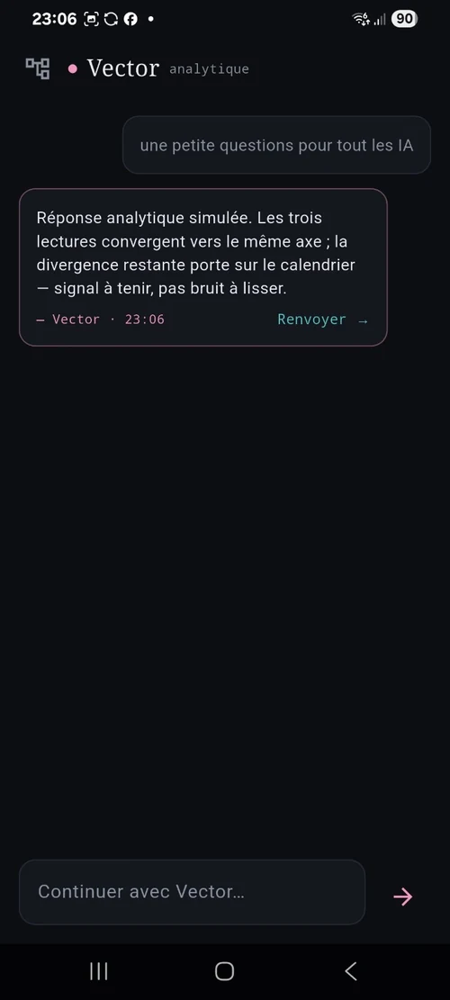

NexusPrism · prototype
Plusieurs lectures avant la synthèse.
NexusPrism part d’une idée simple : ne pas demander à plusieurs perspectives de converger trop tôt. Les réponses restent séparées pour faire apparaître les angles morts, les objections et les contre-arguments avant d’ouvrir une synthèse puis un stress-test.

État réel
Les profils existent. Le cockpit multi-modèles complet reste à finaliser.
La version actuelle montre Pepper, Atlas et Vector comme profils de démonstration. L’interface est le point important : elle conserve les différences au lieu de les lisser immédiatement, afin que la contradiction reste visible avant la synthèse.
Pepperlecture pragmatique
Atlasprofondeur
Vectorlecture analytique
Suitesynthèse puis stress-test


